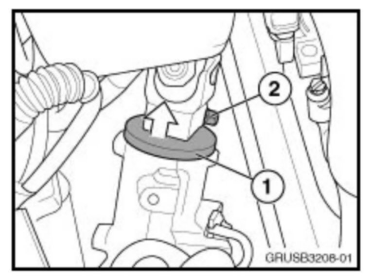
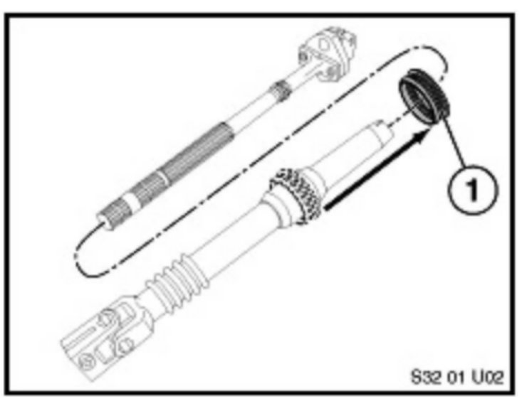
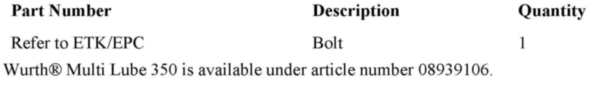
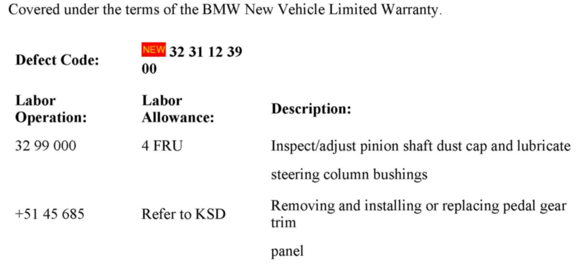

Steering - Steering Column Rub/Scrape Noises
SI B 32 17 08Steering and Wheel Alignment
February 2010
Technical Service
This Service Information bulletin supersedes SI B32 17 08 dated December 2008.
[NEW] designates changes to this revision
SUBJECT
Rubbing and/or Scraping Noise from the Steering Column
MODEL
E46 (3 Series)
E53 (X5)
E60 (5 Series)
E61 (5 Series)
E63, E64 (6 Series)
E65, E66 (7 Series)
E70 (X5)
E71 (X6)
E82, E88 (1 Series)
E83 (X3)
E85, E86 (Z4)
E90, E91, E92, E93 (3 Series)
SITUATION
The customer may report a rubbing or scraping noise, which occurs when turning the steering wheel from left to right. While there are a number of components which can cause this type of noise, this bulletin is specifically related to those noises which occur directly at the steering shaft.
CAUSE
This type of noise can be caused by the following:
^ Contact between the pinion shaft dust cover and the steering gear
^ Insufficient lubrication of the bulkhead seal for the steering shaft
CORRECTION
Isolate the source of the noise, using a stethoscope or other suitable listening device. If the noise is coming from the steering shaft, then the pinion shaft duct cover should be checked, and the steering shaft seal should be lubricated.
PROCEDURE
Locate the source of the noise, using a stethoscope or other listening device. If the noise is coming from the steering shaft area, proceed as follows:

1. Using a pry bar or other suitable tool, push up slightly on the pinion shaft dust cover (1) while someone turns the steering wheel. If the noise changes or is eliminated, proceed to step 2. If the noise does not change, proceed to step 5.
2. Loosen the securing bolt (2) on the steering coupler.
3. Push the dust cap up to eliminate contact between the cap and the steering gear.
4. Refer to the Tightening Torque section of the Repair Manual for torque values and requirements for bolt replacement. Tighten the securing bolt (2).
5. Lubricate the steering shaft slip ring (1) by spraying Wurthreg; Multi Lube 350 onto the steering shaft from the engine compartment side. Turn the steering wheel from left to right to distribute the lubricant. Please note that it is not necessary to remove the steering shaft.

6. Remove the trim panel above the brake and accelerator pedals; refer to Repair Instruction RA 51 45 185 "Removing and installing/replacing trim for pedal assembly".
7. Lubricate the steering shaft slip ring (1) by spraying Wurthreg; Multi Lube 350 onto the steering shaft from the passenger compartment side. Turn the steering wheel from left to right to distribute the lubricant.
8. Refit the trim panel.

PARTS INFORMATION

WARRANTY INFORMATION